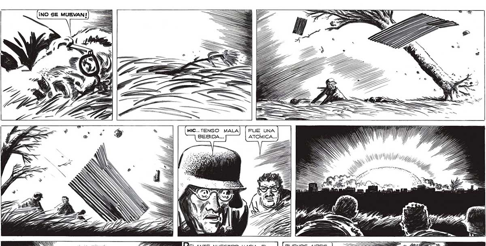
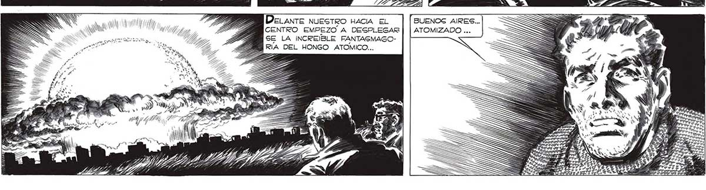

296 FUE UNA ATOMICA.... WN 10//7 ÚEZS 77, Delante NUESTRO HACIA EL BUENOS AIRES... S NS A 177 4 CENTRO EMPEZO A DESPLEGAR | | ATOMIZADO ... <A ER Ze SE LA INCREIBLE FANTASMAGOAA Ea Lee, EA RIA DEL HONGO ATOMICO... XA tes y * E NN QQ , > 0d Y) Y N yA z, dada a A . Ha 7 *, » "Ay, GUA, 17 TZ Y? ¿ IRE BE 7 2 AA MN 7 TIA

